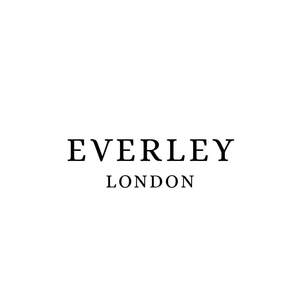

Trade Mark Journal No.2025/024 13 June 2025
UK00004198763 5 May 2025 (3,4,14,16,18,20,21,24,25,27,28,35)

- Class 3
- Room fragrances; Room fragrancing products; Scented room sprays; Room scenting sprays; Room perfume sprays; Room fragrancing preparations; Breath fresheners; Room perfumes in spray form; Refills for electric room fragrance dispensers; Fragrance refills for non-electric room fragrance dispensers; Air fragrancing preparations; Air fragrance reed diffusers; Household fragrances; Fragrance for household purposes.
- Class 4
- Candles; Candles and wicks for candles for lighting; Tealight candles; Votive candles; Scented candles; Wicks for candles; Candles for use as nightlights; Nightlights [candles]; Candles for lighting; Fragranced candles; Candles and wicks for lighting; Candles in tins; Candle torches; Perfumed candles; Candles (Perfumed -); Christmas lights [candles]; Candles for use in the decoration of cakes; Table candles; Tea light candles; Fruit candles; Floating candles; Aromatherapy fragrance candles; Candles for night lights; Musk scented candles; Christmas tree decorations for illumination [candles]; Christmas tree candles; Christmas tree ornaments for illumination [candles]; Candles for absorbing smoke; Candle assemblies; Special occasion candles; .
- Class 14
- Precious metals; Jewellery in precious metals; Jewellery of precious metals; Jewellery coated with precious metals; Jewellery plated with precious metals; Cases of precious metals for jewels; Jewellery being articles of precious metals; Jewellery made of precious metals; Jewellery fashioned of precious metals; Jewelry boxes of precious metals; Jewellery boxes of precious metals; Watches; .
- Class 16
- Writing paper; Photographs; Stationery; Printed publications; catalogues; calendars; tags and labels; Packaging materials; Writing paper pads; Writing paper holders; Paper; Writing stationery; Envelopes [stationery]; Paper stationery; Printed stationery; Stickers [stationery]; Wrappers [stationery]; Binders [stationery]; Photographs [printed]; Printed photographs; Pictures; Photographic reproductions; Photo prints; Art pictures; Photographic prints; Picture postcards; Desk sets; Desk baskets for desk accessories; Desk mats; Desk trays; Pencil sets; Desk pads; Holders for desk accessories; Pen sets; Desk tidies; Calendar desk pads; Desk calendars; Calendar desk stands; Desk diaries; Printing sets, portable [office requisites]; Leather pencil cases; Desk blotters; Leather covered diaries; Leather book covers; Table mats of cardboard; Writing sets; Leather bookmarks.
- Class 18
- Leather and imitations of leather, and goods made of these materials and not included in other classes; Trunks and travelling bags; Umbrellas; parasols; walking sticks.
- Class 20
- Furniture; mirrors; picture frames; photo frames; cushions.
- Class 21
- Aromatic oil diffusers, other than reed diffusers, electric and non-electric; Plug-in diffusers for mosquito repellents; Scent sprays [atomizers]; Oil burners (aromatherapy); Plates for diffusing aromatic oil; Perfume burners; Burners (Perfume -); Incense burners; Glass holders for candles; Non-electric wall sconces [candle holders]; Perfume atomisers; Perfume vaporizers; Perfume bottles; Perfume sprayers; Perfume atomizers [empty]; Vaporizers for perfume [empty]; Perfume burners [other than electric]; Perfume sprays, sold empty; Vaporizers for perfume sold empty; Air fragrancing apparatus; Porcelain; Statues of porcelain, ceramic, earthenware or glass; Statues of porcelain, earthenware, ceramic or glass; Statues of porcelain; Figurines of porcelain; Statues of porcelain, ceramic, earthenware, terra-cotta or glass; Statuettes of porcelain, ceramic, earthenware or glass; Figurines of porcelain, ceramic, earthenware, terra-cotta or glass; Figurines [statuettes] of porcelain, ceramic, earthenware or glass; Porcelain ware; Commemorative statuary cups of porcelain, ceramic, earthenware, terra-cotta or glass; Tableware of porcelain; Decorative porcelain ware; Porcelain flower pots; Dinnerware of porcelain; Works of art of porcelain, ceramic, earthenware, terra-cotta or glass; Boxes of porcelain; Wall decorations of porcelain; Mugs made of porcelain; Drinking mugs made of porcelain; Candlesticks of glass; Glass candlesticks; Glass pots; Glass vases; Baking dishes made of porcelain; Glassware; Glass tableware; Beverage glassware; Tableware Crystal [glassware]; Tableware, cookware and containers; Tableware of porcelain; Painted glassware; Glass decanters; Glass dishes; Glass mugs; Glass vases; Glasses, drinking vessels and barware; Dinnerware of porcelain; Glass bottles; Wine glasses; Glass bowls; Glass flasks [containers]; .
- Class 24
- Towels; Bath towels; Bath sheets (towels); Bathroom towels; Beach towels; Tea towels; Terry towels; Kitchen towels; Kitchen towels of cloth; Towels of textiles; Dish towels; Glass cloths [towels]; Hooded towels; Hand towels; Turkish towels; Bath wrap towels; Yoga towels; Textiles for furnishings; Textiles for interior decorating; Textiles for upholstery; Textiles in the form of window furnishings; Textiles made of cotton; Textiles made of linen; Textiles made of synthetic materials; Textiles made of wool; Textiles; Textile goods, and substitutes for textile goods; .
- Class 25
- Dressing gowns; Gowns; Bridal gowns; Wedding gowns; Evening gowns; Night gowns; Dresses; Ball gowns; Cocktail dresses; Dresses for evening wear; Evening dresses; Silk clothing; Dresses made from skins; Eye masks; Face mask [clothing]; Face masks [fashion wear]; Sleep masks; Slippers; Leather slippers; Slipper socks; Dance slippers; Slippers made of leather; Women's foldable slippers; Clothing; Ready-to-wear clothing; Gloves [clothing]; Parts of clothing, footwear and headgear; Headbands [clothing]; Belts [clothing]; Gloves for apparel; Bathrobes; Clothing; Headwear; Footwear; .
- Class 27
- Non-textile wall hangings; Hangings (Wall -), not of textile; Handcrafted non-textile wall hangings; Decorative wall hangings, not of textile; Tapestry [wall hangings], not of textile; Wall coverings; Tapestry-style wall hangings, not of textile; Wall hangings, not made of textile; Rugs; Carpets, rugs and mats; Rugs [mats]; Fur rugs; Rugs (Floor -); Textile floor mats for use in the home; Textile wall coverings; Wall coverings of textile.
- Class 28
- Games and playthings; Christmas tree decorations; Christmas tree decorations and ornaments; Decorations for Christmas trees; Decorations and ornaments for Christmas trees; Christmas stockings; Christmas dolls; Toy Christmas trees; Soft toys; Soft sculpture toys; Soft sculpture plush toys; Plush toys; Cuddly toys; Soft toys in the form of animals; Fluffy toys; Smart plush toys; Toys; Soft toys in the form of elks.
- Class 35
- Retail services in relation to fabrics; Retail services in relation to furnishings; Retail services connected with the sale of furniture; Retail services in relation to floor coverings; Retail services in relation to wall coverings; Retail services in relation to furnishings, marketing and promotional services, enabling customers to conveniently view and purchase those goods in a department store; The bringing together, for the benefit of others, of a variety of goods, enabling customers to conveniently view and purchase fabrics, clothing, fragrances, candles, watches, jewellery, accessories from a household, clothing and accessories catalogue by mail order, by an Internet website, or by means of telecommunications; Enabling customers to conveniently view and purchase those goods from a general merchandise Internet web site or from a catalogue; Gift registry services.
Everley London Ltd
Representative: GCS Europe Ltd